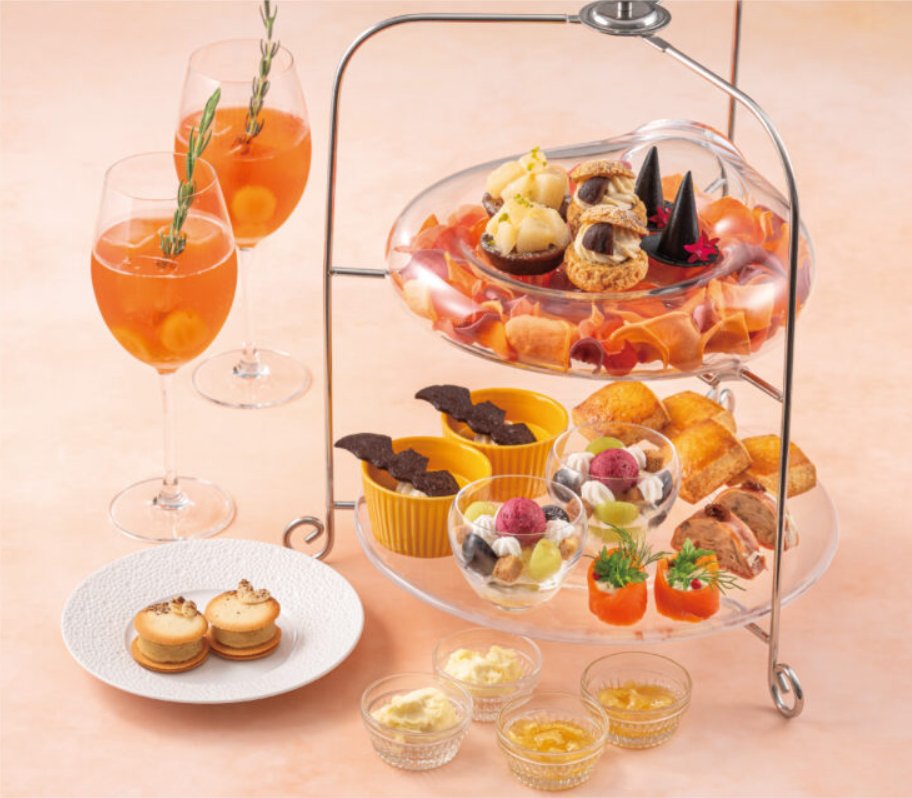
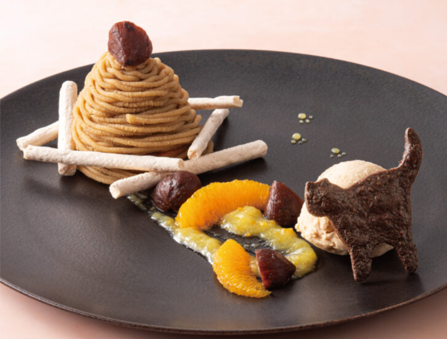
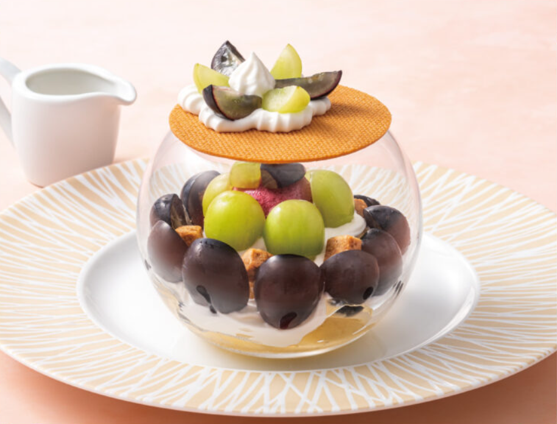
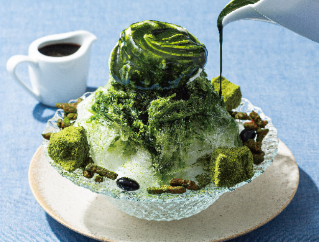
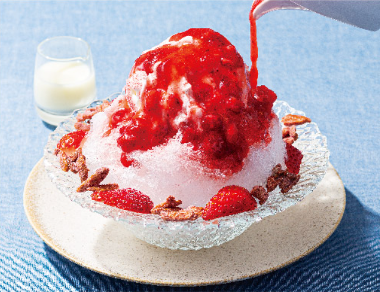

【 Seasonal Menu 】

【 Blue brick Tea set 】
1250 Bath
【 Sweets / 甜點 】
- Langues de Chat Frais de Saison (Sweet Potato)
- Petit Tarte Poire
- Grape Glass Dessert
- Pumpkin Pudding
- Petit Cookie Choux Chestnut
【 Savories / 料理 】
- Witch's Hats
- Salmon Roll with Cream Cheese
- Pressed Mushrooms
【 Scone / 司康 】
- Handmade scones Served with homemade apple jam & clotted cream

180 Bath
【 Milktea Montblanc 】
- A rich milk tea with a creamy
- sweet chestnut flavor.

195 Bath
【 Dessert au Verre 】
- Shine Muscat & Nagano Purple Grapes with cream and biscuits

210 Bath
【 Matcha Kakigori 】
- Japanese shaved ice with a light, fluffy texture
- topped with a flavorful matcha syrup from Uji Kyoto

250 Bath
【 Strawberry Kakigori 】
- A refreshing Japanese shaved ice dessert with a sweet strawberry syrup and condensed milk.
- from Fukuoka